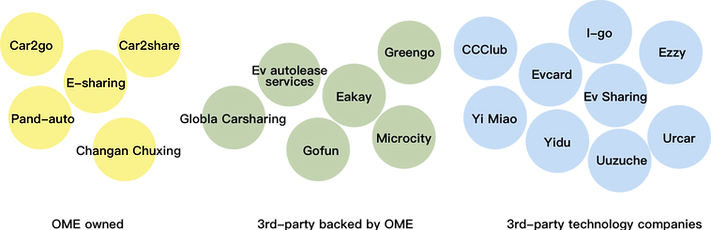
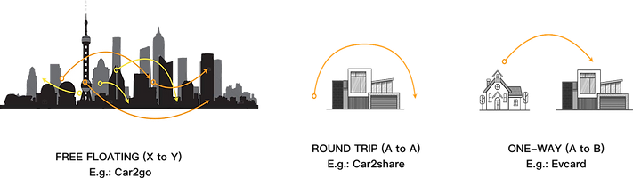
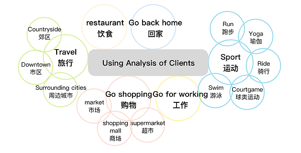
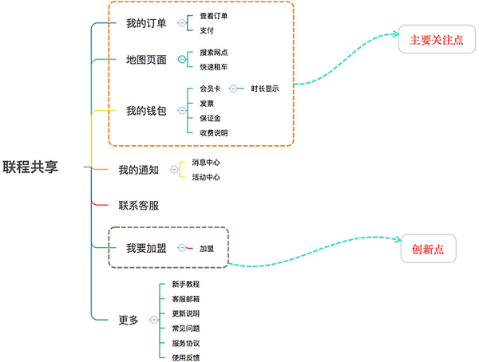
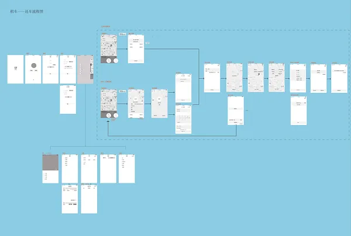
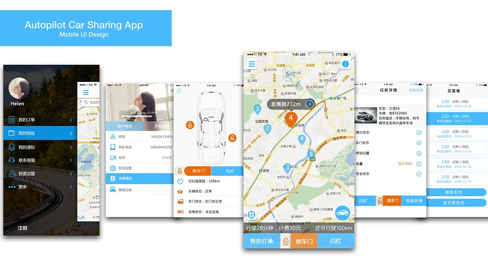
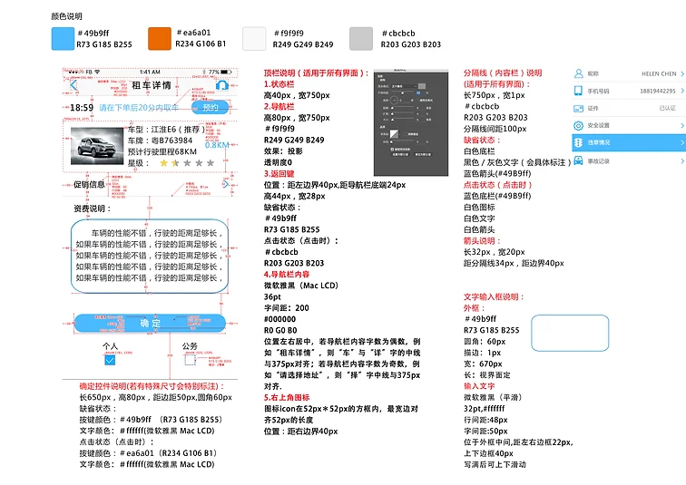

汽车共享服务设计Service Design
项目说明按旧站英文原文保留；时间与个人介绍反映当时的作品集记录。Original portfolio text is preserved in English. Dates and biographical information reflect the archived portfolio; see the academic homepage for current information.

Service Design
Time sharing service design for electronic car
(07.2016--11.2016)
This project launched in Shenzhen, China in 2016.
Background
When CC-Club started the first car-sharing business in China in 2010, it had a small fleet of vehicles to provide mobility services for the Alibaba business campus. In 2013, the number of shared vehicles nationwide reached 780, with 5 major companies each owning fleets of over 50 cars. Today, it consists of more than 26,000 shared vehicles especially in tier 1 and tier 2 cities (e.g. Beijing, Shanghai, Hangzhou, Shenzhen, Changsha, Wuhan etc.), operated by dozens of car-sharing operators (CSOs).[1]
Chinese governments are in favor of car-sharing developments both at central and local levels, led by the Shenzhen development research centre, the program for the integration and application of car-sharing technology was officialy launched in 2014.
In this project, the time-sharing cars of this company were offered by 3rd-party from OEM, and car-sharing model is ONE-WAY (A to B). The purpose of this project is to build a platform for company staff as well as its clients. We followed the process of interaction design: market and design research, user research & task analysis, business modelling and concept design, design evaluation and test, information architecture and prototype design and System Design to build up this car-sharing platform.
1. Market and Design Research
Nature of operation

The three main Car-Sharing models as practised by three major players in China

2. User Research & Task Analysis
Analysis of clients using old version.

Pain Points
Complicated steps when order a car 下单步骤多
Small font that can not recognize under sunshine 字体太小，用户体验差
Many bugs after order 下单后bug多
Service data loss in background 后台服务数据丢失
Bad facilities in car 车辆硬件设施差
Few parking lot 还车点少，需要到指定网点还车
Few charging pole 充电桩少
3. Information Architecture and Prototype Design
Information Architecture Design

Image from Prof. DrJianmin Wang
4. Design Evaluation and Test
Version 1.0

Image from Yang Li
Version 2.0
Corporate rights
Version 3.0
Corporate rights
UI Design
Image from Liangyu Cai, Zhongji Song

Image from Yang Li
5. System Design (Delivered to software engineers)

Image from Yang Li
Team: UXLab of Tongji University
Reference：
1. Car-sharing in China: How to operate a successful business. 03.2017, Roland Berger.